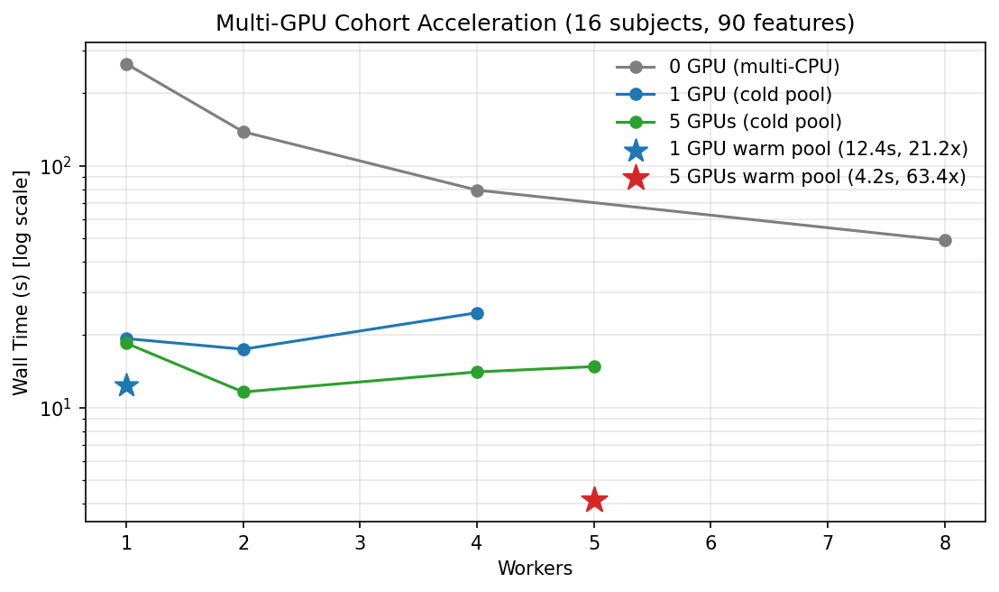

Note
Go to the end to download the full example code.
Parallel runs and acceleration
HabitatSpec declares what to compute;
RunPolicy declares how to schedule it. Pass a
backend from backend_from_policy() into
fit_predict(). With a fixed random_seed
the maps match serial execution.
On a dense 3D voxel-texture cohort, multi-GPU process pools raise throughput:
Single-subject GPU voxel texture: cuts 3D texture computation (90 features across 54,913 ROI voxels) from 19.85s on pure CPU down to 0.71s with HABIT full GPU (see Voxel texture and GPU).
Multi-GPU cohort: on a 16-subject cohort (878k ROI voxels, 90 features), 5 GPUs with persistent workers cut wall time from 263.49s (CPU serial) down to 4.16s (231.03 subjects/min, 63.4× speedup vs CPU serial, 11.8× speedup vs 8 CPU workers).
Backend selection policy
backend_from_policy() selects
ProcessPoolBackend when any of:
backend == "process"workers > 1parallel_mode == "isolated"
A positive subject_timeout_sec alone does not force spawn (the
library default is 900.0). True in-process serial is simply
RunPolicy(workers=1, backend="serial").
Production multi-GPU configuration
To achieve maximum throughput on multi-GPU nodes (e.g. 5× RTX 4080 SUPER),
pin one worker process per physical GPU card via cap_workers_to_gpu_pool=True
and reuse persistent workers with with backend.reuse_workers()::
from habit.contracts import cohort_from_directory
from habit.execution import backend_from_policy
from habit.recipes import Study
from habit.spec import HabitatSpec, RunPolicy, Spec, Stage
# 1. Pipeline with GPU-accelerated voxel texture extraction
spec = HabitatSpec(
name="multi_gpu_cohort_analysis",
stages=(
Stage(
"extract_voxel_features",
Spec(
"voxel_radiomics",
{
"modality": "T1",
"use_torch_radiomics": True,
"use_gpu_matrices": True,
"params": {"setting": {"binWidth": 25}},
},
),
),
Stage("partition", Spec("slic", {"n_supervoxels": 24})),
Stage("pool", Spec("pool")),
Stage("fit", Spec("kmeans", {"n_habitats": 3})),
Stage("assign", Spec("nearest_centroid")),
Stage("quantify", Spec("volume")),
),
random_seed=42,
)
# 2. Configure 5 workers pinned across physical GPUs
policy = RunPolicy(
workers=5,
backend="process",
cap_workers_to_gpu_pool=True,
parallel_mode="persistent",
)
backend = backend_from_policy(policy)
# 3. Process the entire cohort, amortizing worker startup across subjects
cohort = cohort_from_directory("my_data/preprocessed", modalities=("T1",), roi="T1")
if __name__ == "__main__":
with backend.reuse_workers():
result = Study(spec).fit_predict(cohort, backend=backend)
Robust execution: fault tolerance, timeout, and resume
Real-world clinical batches require fault isolation, hanging-process protection, and crash recovery:
from pathlib import Path
from habit.execution import CheckpointStore, backend_from_policy
from habit.spec import RunPolicy
# Configure fault-tolerant policy with 30s timeout and checkpointing
policy = RunPolicy(
workers=4,
backend="process",
on_subject_failure="continue", # Skip failed subjects without crashing
subject_timeout_sec=30.0, # Terminate hung cases automatically
resume=True, # Skip already processed cases
)
backend = backend_from_policy(policy)
store = CheckpointStore(Path("results/checkpoints"))
# Run with automatic resume and crash recovery
if __name__ == "__main__":
result = Study(spec).fit_predict(cohort, backend=backend, checkpoint=store)
Cloud benchmark script (recorded; not executed here)
The timings below were measured on AutoDL (2026-09-04): 5× NVIDIA GeForce RTX 4080 SUPER (32 GiB each), 144 logical CPUs (2× Intel Xeon Platinum 8352V), ~503 GiB RAM. Workload: synthetic cohort n=16, shape 80×80×48 (~54,913 ROI voxels/case, ~878,608 ROI voxels total), 90 voxel-texture features (FirstOrder, GLCM, GLRLM, GLSZM, GLDM, NGTDM).
This page does not re-run that workload when the docs are built.
The snippet is the cloud extract-and-map loop (full driver:
scripts/run_multi_gpu_cohort_bench.py). Warm-pool rows used
with backend.reuse_workers():. On Windows put the map call
inside if __name__ == "__main__":.
import os
from habit.datasets import make_synthetic_cohort
from habit.execution import ProcessPoolBackend
from habit.spec import RunPolicy
from habit.voxel_features.voxel_radiomics import VoxelRadiomicsFeatures
def extract(subject):
return VoxelRadiomicsFeatures(
modalities=("T1",),
roi="tumor",
kernel_radius=1,
voxel_batch=10000,
use_torch_radiomics=True,
use_gpu_matrices=True,
torch_device="auto",
)(subject)
if __name__ == "__main__":
cohort = make_synthetic_cohort(
n_subjects=16, shape=(80, 80, 48), rng=21
)
# 5-GPU layout; CPU serial used CUDA_VISIBLE_DEVICES="-1"
# and use_torch_radiomics=False / use_gpu_matrices=False.
os.environ["CUDA_VISIBLE_DEVICES"] = "0,1,2,3,4"
policy = RunPolicy(
workers=5,
backend="process",
parallel_mode="persistent",
cap_workers_to_gpu_pool=True,
on_subject_failure="fail_fast",
)
backend = ProcessPoolBackend.from_policy(policy)
# Cold pool: pays spawn + CUDA init on this map()
results = list(backend.map(extract, cohort))
# Warm pool: reuse workers / CUDA contexts across the cohort
with backend.reuse_workers():
results = list(backend.map(extract, cohort))
Architectural notes from that run:
GPU-bound texture: single-subject compute is ~0.71s on one GPU. CPU serial is 263.49s; 8 CPU workers 49.16s; 5 GPUs with a warm pool 4.16s (63.41× vs CPU serial, 11.83× vs 8 CPUs).
Cold vs warm pool: a cold 5-worker start costs ~9.4s (spawn, import PyTorch/SimpleITK, five CUDA contexts, join).
reuse_workers()amortizes that fixed cost.Small-cohort cold-pool workers: on 16 subjects, 2 workers on 5 GPUs (11.61s) beat 5 workers (14.78s). Extra workers save little compute and add spawn / CUDA-init / modulo imbalance (16 is not divisible by 5). For large cohorts or a warm pool, use all GPUs.
Recorded AutoDL timings
Numbers are copied from the cloud run, not recomputed by this page.
Scenario |
Device |
Workers |
Pool |
Wall (s) |
Subjects/min |
Speedup vs CPU serial |
|---|---|---|---|---|---|---|
0 GPU |
CUDA=-1 (CPU) |
1 |
cold |
263.49 |
3.64 |
1.00× |
0 GPU |
CUDA=-1 (CPU) |
2 |
cold |
138.03 |
6.96 |
1.91× |
0 GPU |
CUDA=-1 (CPU) |
4 |
cold |
79.23 |
12.12 |
3.33× |
0 GPU |
CUDA=-1 (CPU) |
8 |
cold |
49.16 |
19.53 |
5.36× |
1 GPU |
CUDA=0 |
1 |
cold |
19.30 |
49.73 |
13.65× |
1 GPU |
CUDA=0 |
2 |
cold |
17.44 |
55.04 |
15.11× |
1 GPU |
CUDA=0 |
4 |
cold |
24.67 |
38.91 |
10.68× |
1 GPU |
CUDA=0 |
1 |
warm |
12.41 |
77.33 |
21.22× |
5 GPUs |
CUDA=0,1,2,3,4 |
1 |
cold |
18.47 |
51.96 |
14.27× |
5 GPUs |
CUDA=0,1,2,3,4 |
2 |
cold |
11.61 |
82.68 |
22.70× |
5 GPUs |
CUDA=0,1,2,3,4 |
4 |
cold |
14.05 |
68.32 |
18.75× |
5 GPUs |
CUDA=0,1,2,3,4 |
5 |
cold |
14.78 |
64.97 |
17.83× |
5 GPUs |
CUDA=0,1,2,3,4 |
5 |
warm |
4.16 |
231.03 |
63.41× |

Recorded AutoDL result (16 subjects, 90 features). Stars are warm persistent pools. This page does not regenerate the figure at build time.